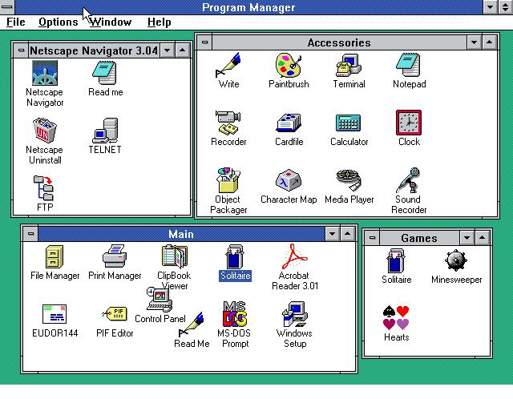
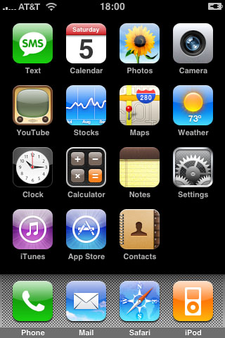
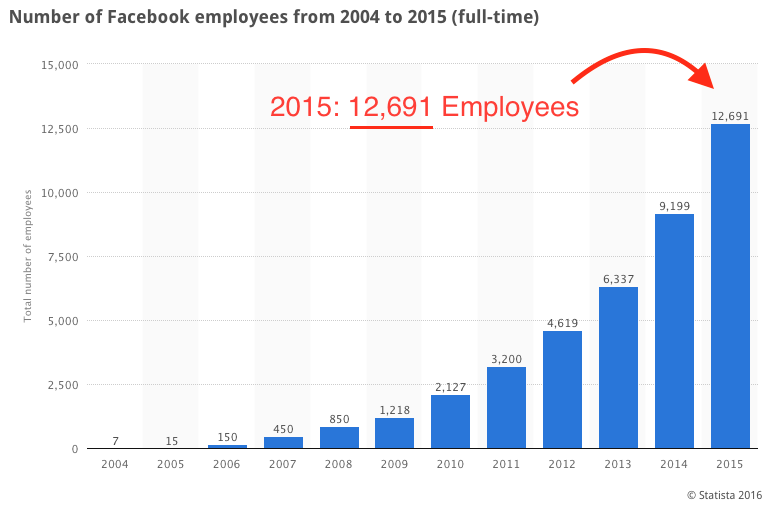
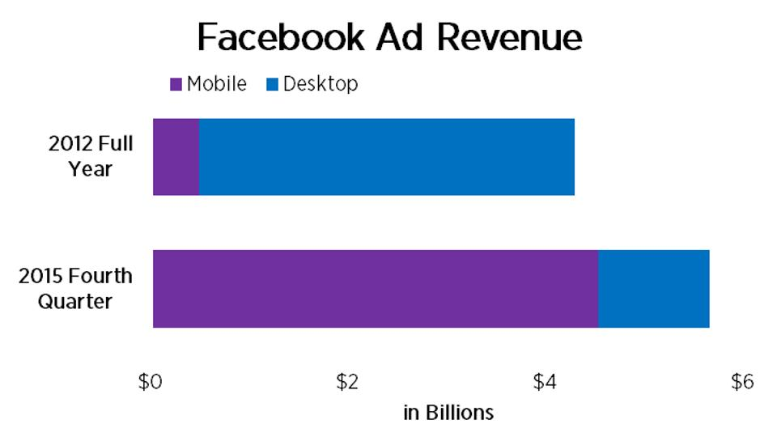
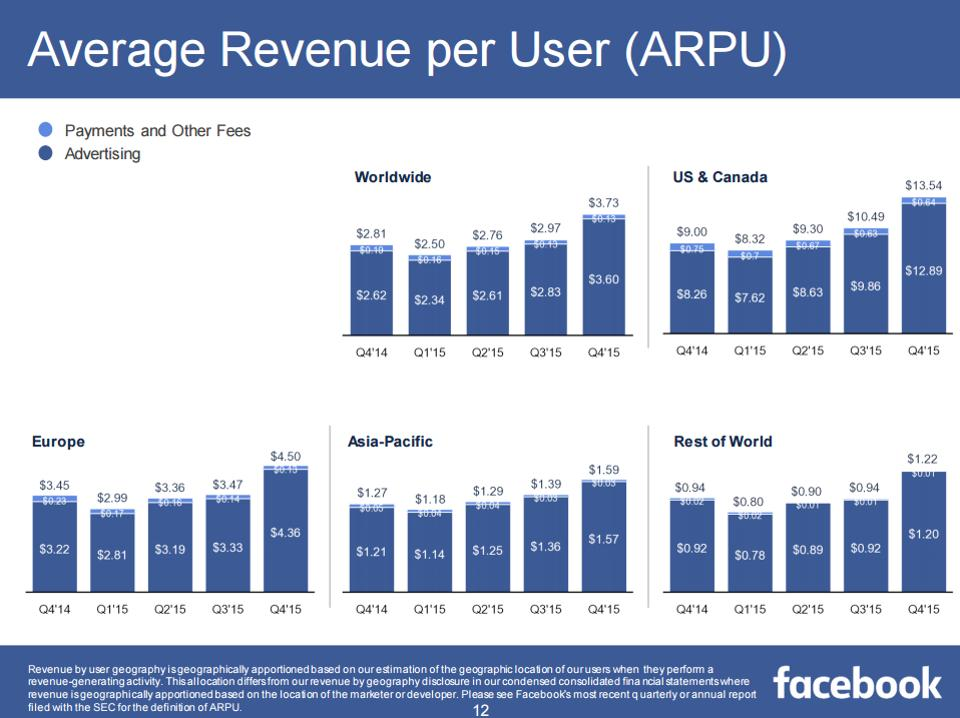

Cross-Platform mHealth with React Native
2016 Yale Tech Summit
Workshop by E. Kevin Hall, MD / @eugekev
Pediatric Cardiology, Yale
Course Goal
We will discuss React Native, a framework for developing native mobile applications on both Android and iOS.
We will live code a simple mHealth step counter live for both platforms.
Who is this guy?
- Pediatric Cardiologist at Yale
- Grew up with computers, beginning with TI 99/4A.
- A year ago wrote and released the Yale Cardiomyopathy Index, one of the first Apple ResearchKit applications.
- Before and since working hard in mHealth research.
Historical Context
Computing ⟼ Desktop Networked ⟼ Mobile ⟼ ? Artificial Intelligence- Last 3-4 decades: Massive increase in computing power. iPhone 6: 120 million times faster than the Apollo computer.
- Massive increase in communications power: Semaphore Line ⟼ 2015 International Telecommunications Union Report 3.2 billion on internet. Metcalf's Law
- Massive increase in always-on communications capability / distance and decrease in cost of same. Massive decrease in device size. 2010 Arab Spring / 2013 #HasJustineLandedYet
- Massive decrease in effort needed to begin and engage in communication. Enables Ecological Momemtary Assessments
Desktop Networked ⟼ Mobile
- Early 2000s, Personal Computer Revolution had settled out on the web browser and a slowly standardizing and increasingly cross-platform set of principles.
- Companies had invested large amounts of money, time, and effort in web programmers and their websites even though tech still 'in infancy'.
- 2007 = iPhone, 3/2008 = release of SDK: for all intents began the mobile development movement. Having invested heavily in web, could companies move some of these resources to mobile?
This transition required some paradigm changes.
2 Necessary Paradigm Changes
#1 DOM vs. "C"
<html>
<head>
<title>Simple Webpage</title>
</head>
<body>
<h1>Welcome</h1>
<p>Content</p>
</body>
</html>
int main (int argc, const char * argv[])
{
NSAutoreleasePool * pool = [[NSAutoreleasePool alloc] init];
NSLog(@"Hello World!"); // Print the string "Hello World!"
int myPrimitive1 = 1;
long myPrimitive2 = 234554664565;
MyClass *myObject1 = nil; // Strong typing
id myObject2 = nil; // Weak typing
HTML on top, Objective-C on bottom
#1 DOM vs. "C"
And several more...
#2 Mouse vs. Touch


Mouse & Touch Paradigms
The web and drag and drop translated poorly to touch and gestures.
Why Native is Difficult
- Harder to Layout the Screen, Manually Compute Size/Position
- Much slower development velocity: Need to recompile after every change. Even to move X a few pixels. Some codebases are very large.
- Release cycle slower: Amazon/Facebook can release multiple versions every day. Early Apple: weeks. Experiment and Interate slowly.
- Multiple Separate Platform Teams and Codebases: Apple, Android, Windows
Why Native is Worth It
-
The Experience is much better & Users expect it:
- Platform specific UI components. Reimplementations are never the same.
- Don't update with platform updates.
- Gestures!
- Sophisticated threading model & parallelization - one of the biggest issues to highly responsive webapps.
Four Horsemen, Scott Galloway, 2015 DLD Conf
Businesses of the Horsemen
- Amazon: Sells you physical goods, gets them to you
- Apple: Sells you physical hardware + luxury items
- Google: Runs web services, sells target markets to advertisers
- Facebook: Runs a social network web service

Facebook
missed the start of mobile
“We do not currently directly generate any meaningful revenue from the use of Facebook mobile products, and our ability to do so successfully is unproven”
- 2012, Facebook SEC filing for IPO
“Mobile is going to crush Facebook”
- Mark Cuban, Facebook IPO Post Mortem
has Massive Engineering Resources

Remember these?
Facebook too tried to leverage their own similar web efforts...
And they did not succeed.
At least not initially
But they reapproached the 2 paradoxes, And solved them with a new approach
Revenue Per User
What is React Native?
A React Native App is a Real Mobile App. With React Native, you don't build a “mobile web app”, an “HTML5 app”, or a “hybrid app”.
React Native uses the same fundamental UI building blocks as regular iOS and Android apps. You just put those building blocks together using JavaScript and React.
- React Native Website.
React Native
A word about HealthKit
HealthStores do this:
Let's do this
A word about tools:
- Native Compilers/Toolchains (XCode, Android Studio)
- Command line and Text Editor
- Javascript (ES6) (and Babel, Yarn)
- Chrome (web browser) for debugging